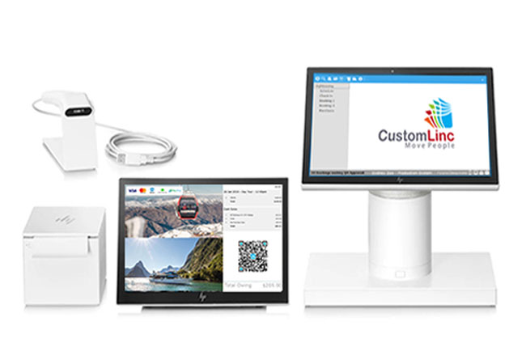
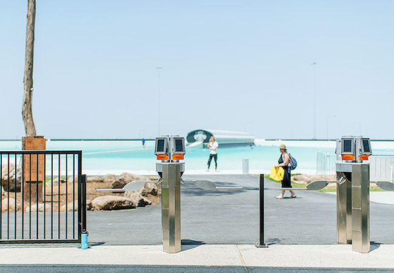

A lighter weight version of CustomLinc for use in the browser and
on smart phones. This module is suitable for staff to check the
manifests and pickup runs in real time.
Read more...

POS

Access Control
CustomLinc Core